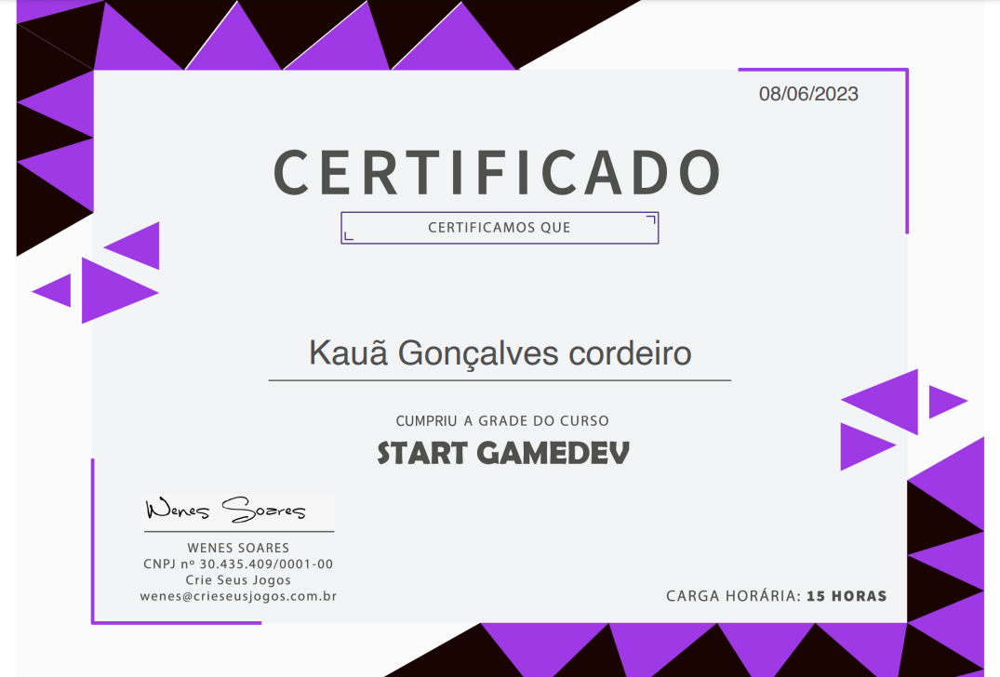

Olá, meu nome é Kauã, mas podem me chamar de Drodde, como sou conhecido. Trabalho com GameDev desde fevereiro de 2023, embora não seja um profissional, estou em constante aprendizado. Atualmente, meu interesse está focado na área de programação pura, incluindo Python, Lua, JavaScript, entre outras linguagens. No momento, estou dedicando meus estudos ao HTML/CSS e Python. O site que você está visualizando foi desenvolvido utilizando HTML/CSS.
Um pequeno trecho de um projeto o qual estava trabalhando.
Projeto
Um dos projetos nos quais participei foi o Cosmic Expedition, juntamente com uma equipe composta por 4 pessoas, incluindo a minha participação, é claro. Desenvolvemos esse jogo para uma Game Jam de aprendizado, e o tema da jam era sobre a Galáxia, tanto quanto me recordo. O nosso jogo apresenta um personagem que é um astronauta em apuros, cuja nave espacial ficou sem combustível em um planeta desconhecido. Em uma corrida contra o tempo, o astronauta deve explorar o ambiente do planeta em busca de fontes de combustível para continuar a viagem.
Ferramentas
As ferramentas que utilizo para o desenvolvimento de jogos incluem a Unity, uma engine robusta e eficiente para a criação de jogos. Em conjunto, faço uso do Visual Studio Community para programar em C#, pois a engine utiliza C# como sua linguagem principal. Além disso, utilizo o Visual Studio Code para o desenvolvimento de projetos envolvendo HTML, CSS e Python.
Certificação

Certificado do curso StartGameDev, distribuído pela CSJ Academy.
Hobbies
Um dos meus hobbies é criar arte no estilo pixel art. Desfruto particularmente dessa forma de expressão artística, pois me permite dar vida aos personagens que concebo em minha imaginação, conhecidos hoje como OC (Original Characters). Mantenho uma conta no Instagram dedicada exclusivamente às minhas criações artísticas, abrangendo desde a minha primeira até a mais recente. Além disso, tenho grande apreço por jogos, especialmente quando compartilho essas experiências com amigos. Minha afinidade com os jogos remonta à minha infância, sendo o meu primeiro videogame um Playstation 2.